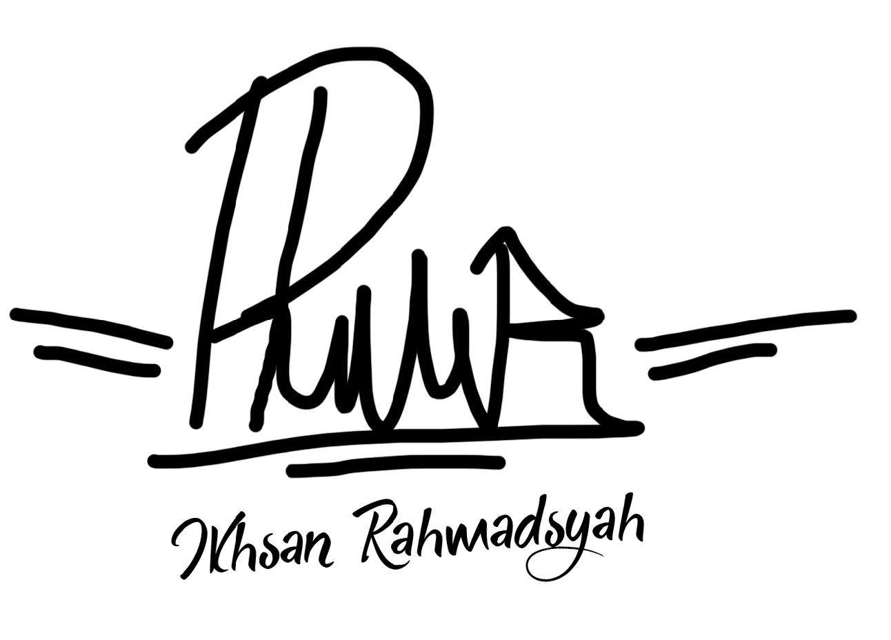

Ikhsan Rahmadsyah
Hanya manusia biasa yang kebetulan dilahirkan kedunia ini. Dilahirkan oleh seseorang yang sangat hebat. Dan dirawat oleh dua orang yang hebat, yang salah satunya adalah seseorang yang melahirkan tadi. Dibesarkan dan besar dikota kembang, sampai saat ini.
Ikhsan Rahmadsyah
| Nama | : | Ikhsan Rahmadsyah |
| No HP | : | +62 8382 294 8151 |
| : | ikhsanrhmdsyh@gmail.com | |
| Alamat | : | Kopo Sayati VIII , Bandung, Indonesia |
| Line | : | ikhsanrahmadsyah |
| GitLab | : | low_badgate |
Edukasi
Edukasi atau pendidikan. Menimba ilmu memanglah sangat penting, terutama untuk mempersiapkan masa depan. Dengan bersekolah Saya mendapatkan banyak pelajaran baik dari guru maupun teman-teman yang pernah Saya kenal.
-
2005 - 2006
TAMAN KANAK-KANAK
TK Aisyiah (A BA)
Pendidikan resmi pertama yang saya dapatkan adalah di TK Aisyiah ini. Ditempat ini Saya tidak mendapatkan banyak kenangan, hanya kesenangan yang ada. Tapi ditempat inilah pertama kalinya Saya mengetahui bagaimana rasanya menyukai seseorang.
-
2006 - 2012
SEKOLAH DASAR
SD Muhammadiyah I
Saya melanjutkan pendidikan ke sekolah dasar. Saya senang sekali Bermain. Terlebih lagi pada zaman ini masih banyak permainan tradisional yang sering dimainkan seperti Kelereng, Petak Umpet, Bancakan, Boyboyan, dan masih banyak lagi.
-
2012 - 2015
SEKOLAH MENENGAH PERTAMA
SMP Negeri 3 Margahayu
Kemudian setelah bersenang-senang disekolah dasar, Saya melanjutkan ke jenjang yang lebih tinggi. Disini Saya belajar lebih serius. Dan disini pula saya mengenal cinta. Kemudian merasakan bagaimana mencintai dan dicintai, Tapi ya gitu akhirnya pasti menyakitkan.
-
2015 - 2018
SEKOLAH MENENGAH KEJURUAN
SMK Negeri 1 Katapang
Saat awal masuk sekolah ini Saya merasakan yang namanya senang, sedih, takut secara bersamaan dan bercampur aduk. Bagaimana tidak, disekolah ini sangat disiplin dan ketat sekali. Tapi Saya senang karena bisa masuk sekolah bagus dan teman-teman yang sangat Pintar.
“ Keren rasanya menjadi berbeda dan menjadi dirimu apa adanya. Juga mengejutkan orang-orang dengan cara yang baik. ”
Brendon Urie
“ Menjadi positif, optimis, dan idealis itu sebenarnya keren. Bangga rasanya melihat diri sendiri melakukan hal-hal indah dan luar biasa. ”
Tom DeLonge
“ Tak harus meniru sesuatu untuk jadi keren. Kalau kau berkulit putih, tak perlu berpura-pura jadi orang hitam dan yang lainnya. Cukup jadi diri sendiri dan kenali siapa Kau sebenarnya. ”
Wiz Khalifa
“ Menyayangimu sangatlah mudah, Aku bisa melakukannya berulang kali tanpa bosan. Yang sulit itu cara menunjukannya. ”
Fiersa Besari - Garis Waktu